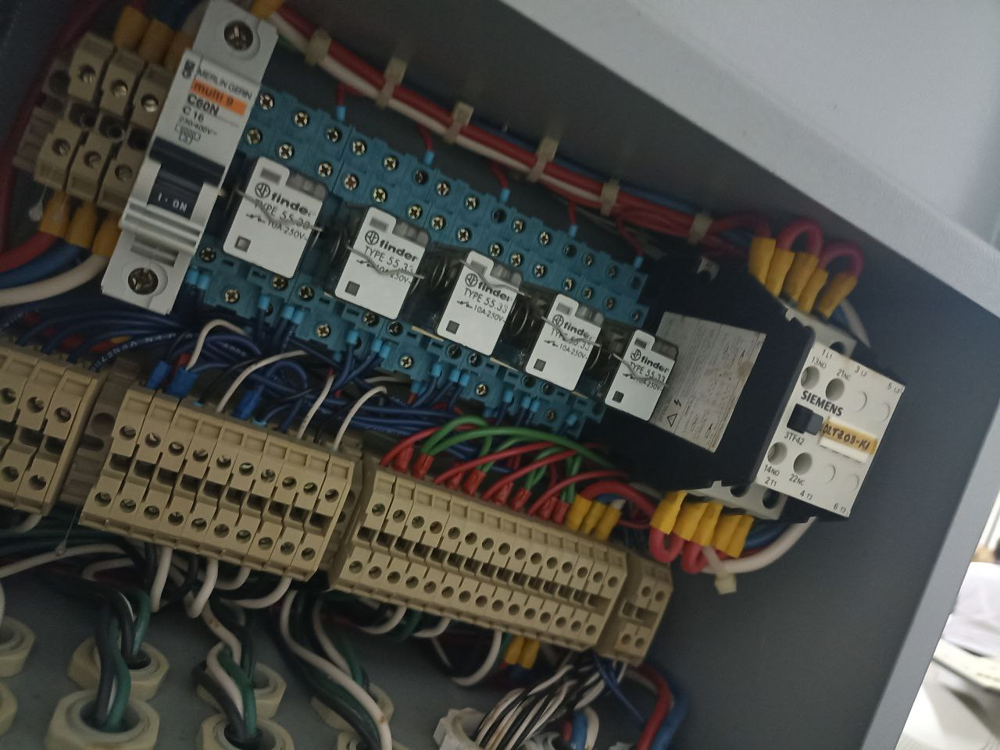
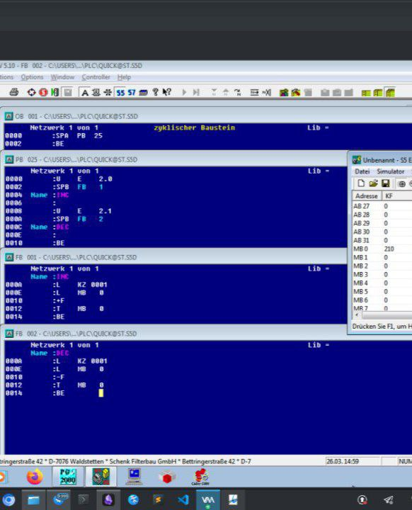
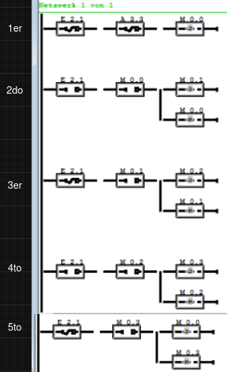
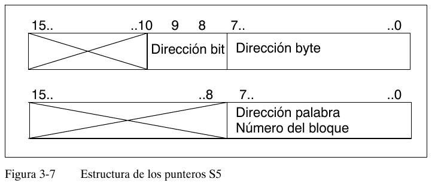
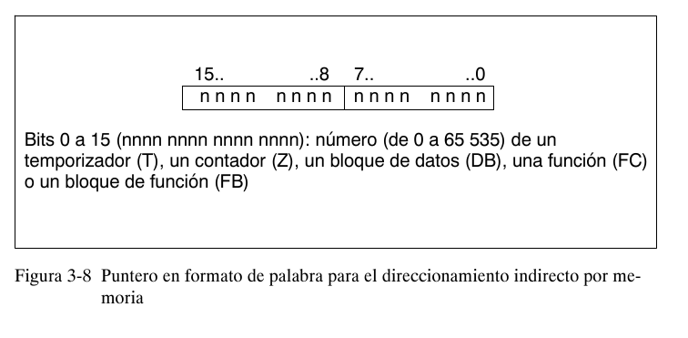
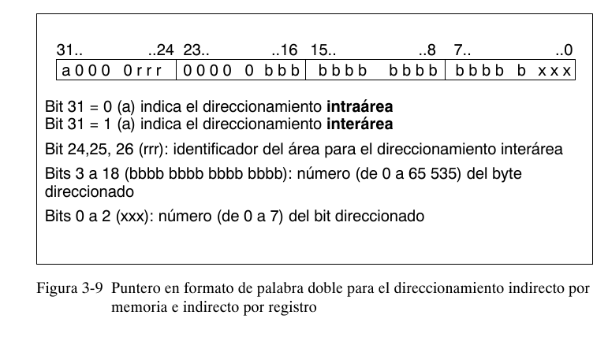
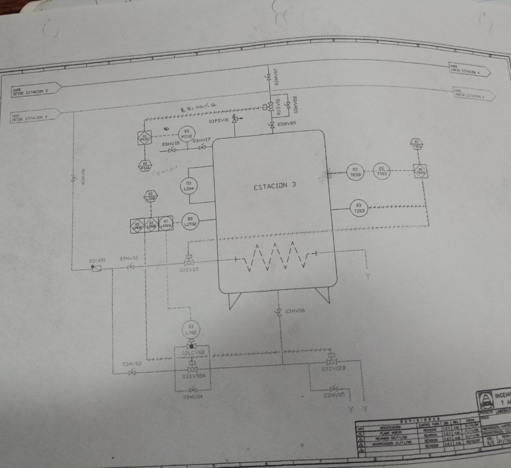
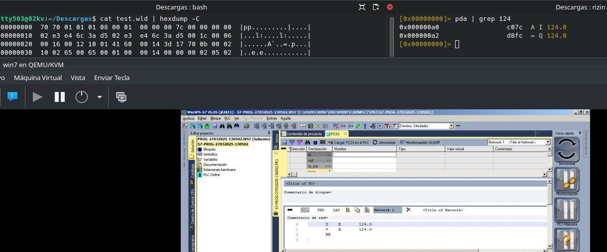
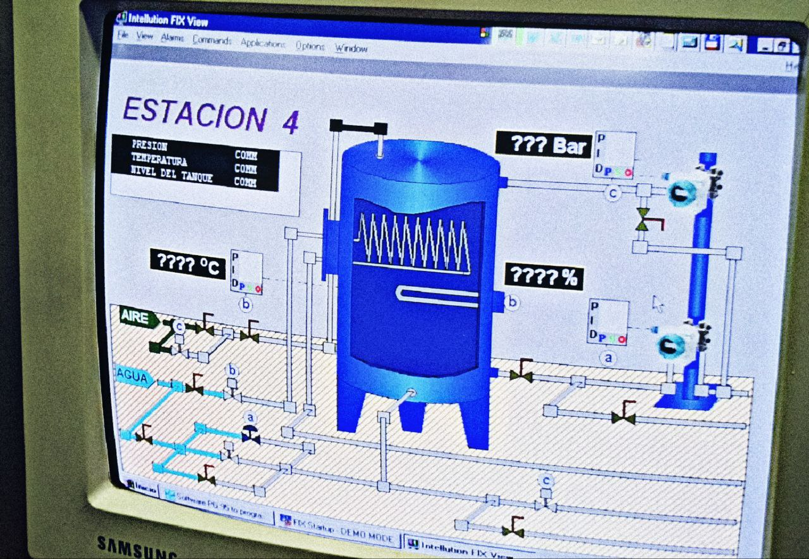

PLC Siemens S5/S7 por dentro: la máquina MC7, sus instrucciones y el silencio forense de las plantas
Me senté frente a un S5 real para desmontar su lenguaje, sus registros y su bytecode. Lo que empezó como curiosidad por la arquitectura terminó en algo más serio: tesis universitarias que describen hasta el último tag OPC de infraestructuras venezolanas… y ni una sola línea sobre quién queda registrado cuando alguien toca el proceso.
/índice_del_analisis +
- Resumen técnico
- Fundamentos del PLC
- Bloques del programa de usuario
- AWL: un Assembly para autómatas
- Compuertas lógicas y operaciones
- Arquitectura de registros
- Direccionamiento de entradas/salidas
- Flip-flop S/R por software
- Temporizadores en Siemens S5
- Contadores y cómputo
- Comparaciones y saltos
- Transición STEP5 → STEP7
- Tipos de datos y direccionamiento
- Direccionamiento indirecto
- Interfaces de bus y protocolos
- Hallazgos en infraestructuras venezolanas
- Malware en entornos ICS
- Ingeniería inversa del bytecode MC7
- Shellcode y binary exploitation
- La caja negra que nunca se instaló
- Por qué los PLC no generan logs
- Casos globales sin logs
- Monitoreo basado en red
- Perspectivas futuras
- Conclusiones
- Referencias
00. Resumen Técnico
| Eje | Hallazgo |
|---|---|
| Arquitectura de ejecución | El bytecode MC7 no corre directo sobre ARM/MIPS: pasa por una capa interpretada (VM o microprograma según cómo se lea) definida por Matloff y Franklin. |
| Codificación de instrucciones | JEB Pro revela opcodes fijos: L = 0xFB, T = 0x7E; instrucciones con longitud máxima de 4 bytes. |
| Laboratorio propio | Windows 7 en QEMU/KVM, hexdump del firmware .wld, rizin sobre direcciones I/Q y WinSPS-S7 V6 correlacionando AWL con bytes. |
| Superficie expuesta | Modbus sin autenticación, CPU de Modicon Quantum paralizable vía Modbus TCP (ICS-ALERT-12-020-03B), stack overflow en el driver serial de Schneider. |
| Contexto real | Tesis públicas documentan S5 aún operativos en Venalum hasta migraciones iniciadas en 2019 y un S7-300 sin cambios arquitectónicos desde 2006. |
| Fallo estructural | Ningún trabajo académico revisado describe registro centralizado de eventos: fallas apuntadas a mano en Excel personales. Sin logs, error y ataque son indistinguibles. |
01. Fundamentos del PLC
¿Qué es exactamente un PLC?
Un Controlador Lógico Programable es, en el fondo, una computadora industrial: recibe señales de sensores, las evalúa contra un programa residente en memoria y acciona salidas que gobiernan máquinas y procesos. La diferencia con un PC de escritorio está en el contrato de operación: debe sobrevivir ambientes hostiles y responder con determinismo temporal. Su ciclo de scan —leer entradas, ejecutar el programa, escribir salidas— tiene que cerrarse siempre en plazos previsibles, y toda la arquitectura interna está optimizada para ese objetivo.
Formas externas de construirlo
- Estructura modular: funciones repartidas en módulos separados montados sobre carril DIN, placa perforadora o RACK; el bus externo une todo.
- Estructura compacta: CPU, memorias, entradas y salidas viven en una sola pieza. Los LOGO! de Siemens y los ОВЕН rusos —muy extendidos en el espacio postsoviético por su precio— son los ejemplos clásicos.
Del laboratorio al campo: hardware real
Antes de hablar de bytecodes conviene bajar al armario eléctrico: ningún código AWL mueve una bomba sin una etapa de potencia detrás. La foto siguiente muestra el interior de un tablero típico donde el PLC convive con protección e interfaz de potencia.

En el riel se distinguen un termomagnético Merlin Gerin curva C de 16A, una hilera de relés enchufables Finder capaces de conmutar cargas de hasta 250V, un contactor Siemens serie 3TF42 y las regletas de conexión. Este acondicionamiento traduce las señales electrónicas del autómata en órdenes para bombas, válvulas y motores; sin él, el proceso físico simplemente no obedece.
El lenguaje STEP5
STEP5 es el entorno clásico de la familia S5 y divide el mundo en dos programas:
- Programa del sistema: rutinas internas del controlador, grabadas en EPROM e inmunes a cortes de alimentación.
- Programa del usuario: la lógica que procesa las señales del proceso, alojada en RAM.
Dentro de STEP5 hay tres lenguajes:
- Listado de instrucciones (AWL): bajo nivel puro, con nemónicos compactos y control fino. Su sintaxis evoca al Assembly de x86: operador, operando y un acumulador (el RLO) que guarda el resultado de la última operación lógica.
- Diagrama de funciones (FUP): gráfico, basado en bloques; natural para control continuo y tratamiento de señales.
- Diagrama de contacto (KOP): gráfico también, pero imitando esquemas de relés; pensado para control discreto y secuencial.
02. Bloques del Programa de Usuario
| Bloque | Nombre | Papel |
|---|---|---|
| OB | Bloque de Organización | Manda en la secuencia de ejecución: puntos de entrada y gestión de interrupciones. Es la columna vertebral del programa. |
| PB | Bloque de Programa | Aquí vive el control principal; puede invocar bloques de funciones y de datos. |
| FB | Bloque de Funciones | Lógica reutilizable llamable desde otros bloques; la pieza de modularización. |
| SB | Bloque Secuencial | Secuencias paso a paso: define transiciones entre pasos y sus acciones. |
| DB | Bloque de Datos | Almacén de variables compartidas entre bloques distintos. |
Operandos disponibles en STEP5
- Entradas (E) — el proceso entra al autómata por aquí.
- Salidas (A) — el autómata sale hacia el proceso.
- Marcas (M) — memoria para resultados binarios intermedios.
- Datos (D) — memoria para resultados digitales intermedios.
- Temporizadores (T) — soporte de las funciones de tiempo.
- Contadores (Z) — soporte de las funciones de conteo.
- Periferia (P) — acceso directo a interfaces de proceso.
- Constantes (K) — valores numéricos fijos.
03. AWL: Un Assembly para Autómatas
Cada línea AWL se arma con tres piezas: el operador (la instrucción), el indicador de operando (tipo de dato) y el operando (dirección o valor). El resultado de cada operación cae en el registro RLO (Result of Logic Operation), cuyo papel recuerda al EAX de x86: es el acumulador donde vive la última evaluación.
El prefijo M señala las "marcas de memoria", zona interna del PLC cuya sintaxis M [byte].[bit] es elegante: a la izquierda del punto va el byte, a la derecha el bit (0–7). En el equipo con el que hice las prácticas hay como máximo 255 bytes de marcas, es decir, 2048 bits.
STEP5 en pantalla
Esta captura muestra el entorno de programación Simatic S5 —aquí sobre PG-2000, herramienta compatible con Windows— tal como hoy sigue usándose para mantener instalaciones heredadas.

Se ven los bloques OB1, PB25, FB1, FB2 escritos íntegramente en AWL, con nemónicos en alemán —herencia de la documentación original— y aritmética directa sobre bytes de memoria (INC/DEC sobre MB0). Cuando el programador maneja direcciones con esa transparencia, un puntero desbocado basta para corromper regiones enteras: ahí reside tanto la potencia como el peligro del lenguaje.
A diferencia de las marcas —lógicas y definidas por el fabricante—, las direcciones de E/S dependen de la ranura física del RACK. En el S5 la correspondencia es fija: ranura 0 = byte 0, ranura 1 = byte 1, y así. En el S7 esa asignación ya puede ajustarse por software.
La asignación = juega un papel comparable al del RET en x86 según el material de origen: toma el último RLO y lo transfiere al operando destino, sea salida física o posición de memoria.
Instrucciones de cierre de bloque
- BE — obligatoria al final de todo OB, PB, SB y FB.
- BEB — termina el bloque solo si en ese instante RLO = 1.
- BEA — termina el bloque pase lo que pase con el RLO.
El RLO, llamado VKE en la documentación alemana, equivale funcionalmente al RAX/EAX de x86_64: acumula cada resultado booleano y se sobrescribe con cada instrucción que produce uno. Entender ese comportamiento de acumulador es imprescindible para seguir el flujo del programa.
04. Compuertas Lógicas y Operaciones
AND (AWL = U)
- Son los contactos en serie de toda la vida.
- Multiplicación bit a bit entre RLO y el operando dado.
- Negada: UN.
- Operandos admitidos: E, A, M, DBX, DIX, L, T, Z.
- Registros tocados: RLO, STA.
OR (AWL = O)
- Contactos en paralelo.
- Suma bit a bit entre RLO y operando.
- Negada: ON.
- Operandos admitidos: E, A, M, DBX, DIX, L, T, Z.
- Registros tocados: RLO, STA.
XOR (AWL = X)
- Semánticamente, "distinto de"; su negación, "igual a".
- Negada: XN.
- Registros tocados: RLO, STA.
Paréntesis: lo encerrado entre ellos se evalúa antes que la operación que lo precede.
OR sin operandos: deja evaluar extremos por separado y unirlos después en una sola OR; una construcción sintáctica que simplifica expresiones largas.
El S5 no trae instrucciones de detección de flancos. El S7 sí las incorpora de fábrica: FP (flanco positivo) y FN (flanco negativo). En S5 hay que fabricar el muestreo a mano con marcas, con la complejidad extra que eso implica.
05. Arquitectura de Registros
| Bit | Registro | Papel |
|---|---|---|
| 0 | ER | Marca la primera consulta de una cadena lógica (queda inhibida): el resultado va directo al RLO. |
| 1 | RLO | El acumulador de bit donde ocurren las operaciones lógicas. |
| 2 | STA | Gestión de errores. |
| 3 | OR | Necesario para el AND-previo-a-OR: indica si ese AND produjo 1. |
| 4 | OV | Se levanta ante desbordamiento u operación inválida en aritmética o coma flotante. |
| 5 | OS | Se activa junto a OV y persiste señalando un error previo; solo vuelve a 0 con SPS o al terminar el módulo. |
| 6-7 | A0, A1 | Códigos de condición derivados de aritméticas, comparaciones, operaciones digitales y bits desplazados. |
| 8 | RB | Resultado binario: permite leer el resultado de una operación de palabra como bit e integrarlo a la cadena lógica. |
06. Direccionamiento de Entradas/Salidas
Las direcciones de E/S siguen el patrón byte.bit: el número de la izquierda es el byte y el de la derecha el bit dentro de ese byte (del 0 al 7).
En la configuración del curso, el byte 2 agrupaba los ocho switches de entrada (E 2.0 … E 2.7) y el byte 3 los ocho LEDs de salida (A 3.0 … A 3.7).
El byte de cada módulo depende de dónde esté clavado en el RACK: Ranura 0 = byte 0, Ranura 1 = byte 1, Ranura 2 = byte 2, etc. El S7 permite remapear esta correspondencia desde el software de programación.
Marcas de Memoria (M)
Las marcas ignoran el RACK y obedecen solo a la configuración interna del autómata: piénsalas como un arreglo de 255 bytes —2048 bits— para banderas y estados intermedios de la lógica.
Uno de sus mejores usos es construir flip-flops S/R puramente lógicos, sin hardware adicional: recordar si un equipo quedó encendido o guardar el estado del paso anterior de una secuencia.
07. Mando Condicional: Flip-Flop S/R por Software
Aquí va la implementación de un pulsador que alterna un LED usando marcas para cazar flancos:
Todo el truco está en el muestreo de los estados 2 y 3, cuando el pulsador mantiene nivel alto. Si el LED ya estaba encendido, el primer estado escribe 0 en M0.0 y esa cadena de ceros se arrastra hasta apagarlo.


08. Temporizadores en Siemens S5
| Tipo | Nemónico | Comportamiento |
|---|---|---|
| S_EVERZ | SE | Retardo a la conexión: la salida sube tras TV solo si la entrada S sigue activa; si S cae antes, el temporizador se reinicia. |
| S_SEVERZ | SS | Retardo a la conexión con memoria: la salida permanece aunque S se desactive; hace falta reset (R) para liberarla. |
| S_IMPULS | SI | Pulso de duración TV al activarse S, independiente de cuánto aguante la entrada. |
| S_VIMP | SV | Pulso prolongado: solo dispara si la entrada se sostiene el mínimo necesario. |
| S_PULS | SP | Pulso de duración TV, también independiente de la duración de la entrada. |
| S_AVERZ | SA | Retardo a la desconexión: la salida sube con S y arranca TV cuando S cae; se apaga al agotarse TV. |
Constante de tiempo (KT):
Cuántos temporizadores ofrece el equipo depende de la CPU: 32 máximo en la CPU-90, 128 en la CPU-95.
Casi toda la bibliografía sobre temporizadores describe el S7, con registros y órdenes que el S5 no conoce; ejecutar ese código en un S5 real revienta por sintaxis. Mi salida práctica fue probar contra un emulador de S5: el simulador PC Simu descartaba directamente la instrucción de transferencia que lleva el contenido de AKKU1 a memoria.
09. Contadores y Operaciones de Cómputo
Cuentan impulsos hacia arriba o abajo entre 0 y 999. Sus parámetros:
- Z0 ... Zmax — identificador del contador (CPU-90: 128 disponibles).
- ZV — incrementar (tope 999).
- ZR — decrementar (piso 0).
- S — carga el valor inicial.
- KZ xxx — ese valor inicial.
- R — resetea el contador.
10. Operaciones de Comparación y Saltos
Comparaciones
Un comparador relaciona dos datos del mismo formato (BYTE o WORD). Variantes:
- != F — desigualdad
- > F — mayor que
- < F — menor que
- >= F — mayor o igual
- <= F — menor o igual
En S5 la F designa enteros de 16 bits (Integer). El S7 la sustituye por I (nemónicos ingleses) y añade D (Double Integer de 32 bits) y G (coma flotante IEEE-FP de 32 bits).
Instrucciones de Salto (Jump)
| Instrucción | Condición |
|---|---|
| SPA | Salto incondicional |
| SPB | Salta si RLO = 1 (verdadero) |
| SPN | Salta si RLO = 0 (falso) |
| SPZ | Salta si AKKU1 = 0 |
| SPP | Salta si AKKU1 > 0 |
| SPM | Salta si AKKU1 < 0 |
| SPO | Salta si OV = 1 (desbordamiento) |
| SPS | Salta si OS = 1 (error persistente) |
| SPR | Salta si BR = 1 (aritmética sin errores) |
En mis pruebas, solo SPA y SPB se comportaron de forma consistente en el hardware disponible; el resto de saltos necesita validación adicional.
11. Transición de STEP5 a STEP7
Conviene precisar la genealogía: el S5-95 comparte gama con el S7-200. El salto relevante del curso fue del S5-95 al S7-300, el modelo dominante en simulaciones y proyectos modernos.
Diferencias de hardware
| Característica | S5-95 | S7-300 |
|---|---|---|
| RAM | 16 KB (STEP5) + 64 KB (ejecución) | Mayor capacidad, según modelo |
| Puerto de programación | AS511 | Interfaces MPI |
| Memoria de trabajo | RAM | RAM |
| Memoria de carga | RAM o EPROM | RAM, Flash o tarjeta de memoria |
| Datos locales | No existen | Sí (temporales dentro del bloque) |
| Datos remanentes | Menor capacidad | Mejor conservación ante pérdida de energía |
12. Tipos de Datos, Constantes y Direccionamiento en STEP7
Constantes: equivalencias S5 → S7
| Formato S5 | Ejemplo S5 | Formato S7 | Ejemplo S7 | Tipo de dato |
|---|---|---|---|---|
| KB | L KB 10 | B#16# | L B#16# A | BYTE (8 bits) |
| KF | L KF 10 | — | L 10 | INT (16 bits) |
| KH | L KH FFF | W#16# | L W#16# FFFF | WORD (16 bits) |
| KM | L KM 1111111111111111 | 2# | L 11111111_11111111 | WORD (16 bits) |
| KY | L KY 10,12 | B# | L B#(10,12) | 2xBYTE (8+8 bits) |
| KT | L KT 10.0 | S5TIME# | L S5TIME# 100ms | TIME (S5TIME) |
| KZ | L KZ 30 | C# | L C#30 | COUNTER (BCD) |
| DH | L DH FFFF FFFF | DW#16# | L DW#16#FFFF_FFFF | DWORD (32 bits) |
| KC | L KC WW | ' xx ' | L ' WW ' | CHAR (8 bits por carácter) |
| KG | L KG +234 +09 | REAL | L +2.34 E+08 | REAL (32 bits, coma flotante) |
Direccionamiento completo de datos
Novedad de STEP7: nombrar bloque de datos y operando juntos, algo imposible en S5. Mezclar direccionamiento absoluto y simbólico en una misma instrucción no está permitido.
Situaciones que sobrescriben el registro DB:
- Acceso a datos mediante direccionamiento completo.
- Invocar un FB (arrastra el registro DB del llamante).
- Llamar a un FC con un parámetro de tipo compuesto (STRING, ARRAY, STRUCT, UDT).
- Pasar a un FC un parámetro alojado en un DB.
- Direccionar un parámetro E/S compuesto en FB o FC.
13. Direccionamiento Indirecto
Formatos de puntero
El puntero de operación indizada ocupa una palabra en S5. El S7 admite dos tamaños: palabra y palabra doble.



Indirección vía memoria
Es el heredero del indirecto de S5: el operando contiene la dirección del valor a procesar. El puntero puede vivir en marcas (M), bloque de datos (DB), bloque de instancia (DI) o locales (L). La gracia del mecanismo es poder cambiar el operando en caliente mientras el programa corre.
14. Interfaces de Bus y Protocolos Industriales
Buses de campo
Redes pensadas para enganchar sensores, actuadores y demás E/S al PLC:
- Profibus: estándar industrial para datos discretos y analógicos.
- Profinet: sobre Ethernet, orientado a tiempo real.
- DeviceNet: habitual en automatización de fábrica.
- CANopen: frecuente en control de movimiento.
- AS-Interface: para sensores y actuadores binarios.
Protocolos de comunicación
- Modbus RTU / ASCII / TCP/IP: el serial de siempre entre PLCs, sensores y actuadores. Detalle clave: nació sin autenticación, lo que lo vuelve un vector serio en redes mal segmentadas.
- DNP3 (Distributed Network Protocol 3): comunicación en automatización de redes eléctricas y agua; común en subestaciones.
- ICCP (Inter-Control Center Communications Protocol): intercambio en tiempo real entre centros de control eléctrico.
- OPC (Open Platform Communication): estándar de interoperabilidad entre equipos industriales de varios fabricantes; usa DCOM para llegar a servidores OPC dentro de la red ICS.
- WORLDFIP: bus de campo para automatización.
SCADA, DCS y HMI
- ALSPA P320: DCS presente en generación eléctrica e industria pesada.
- ABB 800xA: DCS de alta capacidad, programable con Control Builder M.
- Wonderware SCADA: supervisión con librerías para PLCs S7, extensible desde C# o Java.
- PascalSCADA: alternativa libre que habla con PLCs Siemens por Ethernet y Modbus TCP/RTU, ampliable con clases propias en Lazarus/Free Pascal.
- HMI Magelis (hoy Harmony): pantallas táctiles configurables con EcoStruxure™ Operator Terminal Expert.
15. Hallazgos en Infraestructuras Venezolanas
Todo lo que sigue procede de fuentes públicas: trabajos de grado, documentos académicos, reportes oficiales y divulgación técnica. El fin es exclusivamente académico: demostrar por qué la seguridad en infraestructuras críticas no es opcional.
CorpoElec y el ecosistema Schneider Electric
Documentación pública apunta a que CorpoElec opera PLCs Schneider Electric Modicon Quantum en sus sistemas de control, programados con Unity Pro; una plataforma muy difundida en el sector eléctrico venezolano.
El dato más delicado: existe una vulnerabilidad del Modicon Quantum que permite tumbar la CPU sin autenticación previa si se alcanza el puerto Modbus TCP. CISA la documenta en el aviso ICS-ALERT-12-020-03B, y quedan dudas razonables de que llegara a parchearse a tiempo en los equipos afectados. Además circularon reportes de configuraciones con acceso remoto expuesto, aunque esos casos no han sido verificados independientemente.
Schneider también arrastraba un problema grave en su Serial Modbus Driver (ModbusDrv.exe), el componente que se activa al conectar una PC al PLC por puerto serial: un stack overflow identificado por Risk-Based Security que alcanzó a 11 productos —Unity Pro, TwidoSuite, PowerSuite, SoMove, SoMachine y OPC Factory Server entre ellos— y era explotable remotamente.
Venalum: quince años documentados
Las plantas de aluminio de Venalum son un caso de estudio perfecto de lo que la literatura académica revela sin querer. Una tesis de 2016 describe PLC S7-400 con Wonderware SCADA en el control de planta. Y como en 2019 arrancaron oficialmente las migraciones de STEP5 a STEP7, la lectura directa es que los S5 siguieron produciendo aluminio hasta hace muy poco.
Otro trabajo, de 2006, recoge el control del horno de retención sobre un PLC S7-300, con OPC Simatic Net como servidor de comunicaciones y MATLAB 7 como cliente. Que un horno industrial dialogue con MATLAB por OPC dice mucho del procesamiento científico aplicado a datos de planta.
En 2021, una tercera tesis sobre el mismo horno confirma que el S7-300 seguía operativo quince años después, presumiblemente con la misma lógica de comunicaciones. El documento menciona una aplicación Android —que exigiría algún módulo inalámbrico— una única vez, lo que huele a relleno académico más que a despliegue real. Conclusión: mantenimiento sí, cambios arquitectónicos ninguno en década y media.
El plano que lo confiesa todo: un P&ID como mapa
Las tesis no listan equipos: incluyen ingeniería completa. La imagen siguiente es un P&ID (Diagrama de Tuberías e Instrumentación) fechado entre 1996 y 1997, con tanque, serpentín de calentamiento e instrumentación.

Se leen las líneas de flujo —"AIRE DESDE ESTACION 2", "H2O DESDE ESTACION E"—, la simbología ISA (solenoide, transmisores de nivel LIT02, temperatura TE03, indicadores de presión) y el cajetín de mediados de los noventa. Para un atacante este plano es el mapa de vuelo: qué variables se miden, qué actuadores se gobiernan y cómo se conecta todo. Lo escalofriante es que la misma tesis que lo publica no dedica un párrafo a registrar quién modifica esas variables.
Lo que implica publicar documentación crítica
Hay debate legítimo sobre si las tesis que describen infraestructuras deberían ser públicas: cualquiera que las compile obtiene un inventario tecnológico detallado de cada organización. Pero el problema raíz no es la disponibilidad —una inteligencia nacional la conseguiría igual—, sino la carencia de personal de seguridad cualificado dentro de estas organizaciones.
Muchas veces ni siquiera existe un modelo de amenazas formal, y el presupuesto de seguridad aparece después del incidente, nunca antes. Esa reactividad es especialmente peligrosa en OT/ICS, donde la interrupción tiene consecuencias físicas. Es el mismo descuido de invertir en perímetro y olvidar el núcleo que permitió los IDOR por JWT mal validados que documenté en la auditoría a la Web API financiera: sin logs ni autorización interna, el sistema está ciego.
16. Malware y Tácticas de Compromiso en ICS
Havex RAT y el vector OPC
Havex, catalogado en Malpedia, popularizó una táctica insidiosa: instalado en el sistema, barría la red buscando SCADA/ICS apoyándose en el estándar OPC, el protocolo universal de interoperabilidad industrial.
Para hablar con los servidores OPC usaba DCOM y recogía metadatos jugosos: CLSID, nombre del servidor, ID de programa, versión de OPC, proveedor, estado de ejecución, número de grupos y ancho de banda. La puerta de entrada era un email trivial; después, el malware rastreaba OPC y enumeraba la infraestructura entera.
Panorama de amenazas ICS
El catálogo incluye hitos como Stuxnet (centrifugadoras iraníes), Triton (seguridad instrumentada), Pipedream (toolkit modular para PLCs) y el propio Havex (reconocimiento OPC). La lección colectiva: los atacantes ya saben enumerar y comprometer entornos OT con conocimiento de dominio.
En casi todos los casos la puerta inicial es un simple email; desde ahí, reconocimiento lateral tras OPC, Modbus o Profinet. La simplicidad engaña: la sofisticación está en lo que el malware sabe de OT una vez dentro.
17. Ingeniería Inversa del Bytecode MC7
¿Máquina virtual o microprogramación?
La pregunta fascinante que abre este terreno: ¿dónde ejecuta realmente sus opcodes un PLC Siemens? Los nemónicos AWL no corren sobre el procesador físico (ARM o MIPS según modelo), sino sobre una capa intermedia que algunos llaman "VM" o "pseudo-CPU".
Hay debate sobre si eso es una máquina virtual en sentido estricto o más bien microprogramación. Según la definición de Matloff y Franklin, una máquina A (el CPU real) interpreta desde ROM un programa que la convierte en una máquina B (la que entiende AWL): la A está afinada para ese rol y resulta muy rápida, y al intérprete lo llamamos firmware o microprograma.
Leída así, MC5 (en S5) y MC7 (en S7) son los microprogramas que transforman un ARM/MIPS en una CPU de automatización. Y de ahí se deriva el objetivo real en seguridad: superar el estrecho set de AWL y llegar al procesador verdadero.
Herramientas: JEB Decompiler
JEB Pro (PNF Software) soporta explícitamente el S7 y decompila MC7 hacia STL/AWL. Sus capturas revelan detalles decisivos de la codificación:
- La carga L viaja como opcode 0xFB.
- La transferencia T como 0x7E.
- Casi todas las instrucciones —operandos incluidos— caben en 4 bytes: formato fijo o semifijo.
De AWL a hexdump: mi laboratorio
Para ver la traducción a bytes monté un Windows 7 virtualizado sobre QEMU/KVM. La captura muestra la correlación entre el volcado del firmware y las instrucciones que ejecuta el PLC.

Arriba a la izquierda corre cat test.wld | hexdump -C sobre el archivo de firmware. A la derecha, rizin desensambla y encuentra direcciones simbólicas como I 124.0 (entrada) y Q 124.0 (salida). Abajo, WinSPS-S7 V6 enseña el bloque FC23 con la lógica mínima U E 124.0 seguida de = A 124.0. Correlacionar binario con nemónicos así es la arqueología digital necesaria para escribir shellcode funcional sobre MC7; es la misma disciplina que aplico al análisis de malware PE con Capstone y x64dbg, llevada al mundo OT.
18. Exploración de Shellcode y Binary Exploitation en PLCs
Del reversing a la explotación
Entender la codificación MC7 tiene aplicaciones ofensivas y defensivas inmediatas. Mis objetivos de investigación:
- Ver cómo el compilador prepara el firmware para MC7 y codifica cada instrucción.
- Mapear la estructura interna del binario —el equivalente funcional del PE en Windows—.
- Desarrollar shellcode para S7 midiendo cuánto cambia la codificación entre versiones y fabricantes.
- Practicar binary exploitation contra el entorno MC7.
Superficie para fuzzing
Los vectores naturales para fuzzear un PLC:
- Sensores: el flujo de datos que entra por los módulos de E/S es maleable.
- Protocolos: Modbus TCP/RTU, Profinet, OPC… interfaces de red que procesan datos del exterior.
- Ingeniería: TIA Portal, WinSPS S7 o PG2000 son objetivos si el atacante compromete la estación de desarrollo.
Los simuladores no bastan
El obstáculo grande: PC Simu, WinSPS S7 y PG2000 emulan solo la VM de MC7 y jamás modelan la bajada a ARM/MIPS del hardware físico. Validar shellcode a nivel de procesador exige equipo real, y el secretismo de los fabricantes sobre sus CPUs lo complica todo.
No existe nada parecido a un debugger paso a paso para PLCs que muestre en vivo AKKU1, AKKU2, RLO/VKE y la instrucción corriente. Los entornos modernos abandonaron AWL por lenguajes de alto nivel sin exponer el equivalente de bajo nivel: opacidad deliberada que castiga a quien investiga seguridad.
19. La Caja Negra que Nunca se Instaló: Plantas Incapaces de Contar su Historia
Lo que apareció en las tesis
Esta investigación nació de pura curiosidad técnica: la VM que interpreta MC7, la codificación de AWL, los vectores de ataque desde red. Pero al cruzarla con tesis de grado que describen sistemas de control reales, emergió algo más urgente que cualquier exploit de Modbus.
Recorrí trabajos accesibles en repositorios universitarios venezolanos como el de la Universidad Central de Venezuela (saber.ucv.ve). Todos detallan la arquitectura con precisión quirúrgica: modelos de PLC, planos de red, tópicos OPC, protocolos, tags, redundancias. Material suficiente para que un atacante paciente dibuje el sistema completo.
Y en ninguno —ni uno— hay un sistema centralizado de registro de eventos. Ni captura de comandos del operador. Ni retención de logs. Ni SIEM industrial, ni nada que se le parezca.
Lo que sí encontré fue esto: fallas registradas a pulso, en planillas Excel que cada ingeniero conserva en su PC. Textual de uno de los trabajos: "cada Ingeniero de planta guarda en su computadora las data-paro que ha realizado durante todo el año".
El eslabón perdido: HMI llena de interrogantes
Nada ilustra mejor la fragilidad de vigilar sin registrar que una interfaz SCADA antigua. Esta captura muestra Intellution FIX View corriendo en un monitor CRT.

La pantalla dibuja una estación con tanque vertical y serpentín. Temperatura, presión y nivel lucen "???? °C", "??? Bar" y "???? %", con el indicador "COMM" anunciando la caída de comunicación con campo o PLC. Ahí está la paradoja visual: el operador percibe el fallo, pero nada lo estructura en un registro. Si nadie mira en ese instante, el evento se esfuma.
Qué documentan las tesis (y qué callan)
Ejemplos concretos del repositorio de la Universidad Central de Venezuela (saber.ucv.ve): trabajos que diseñan o describen SCADA reales para infraestructura venezolana. El patrón se repite en todos: detalle exhaustivo del control, silencio total sobre registro y auditoría.
| Trabajo de Grado | Tecnologías Documentadas | ¿Sistema de Registro de Eventos? | Enlace |
|---|---|---|---|
| Automatización de la planta de gases especiales AGA Gas (2004) | PLC Siemens, SCADA, DFP, DTI, DLF | No | saber.ucv.ve/handle/10872/15373 |
| Estudio técnico para actualización de SCADA en planta de Total, Jusepin (2006) | Wonderware Intouch 7.0, PLCs Modicon, HIMA, Modbus TCP, histórico SQL | No | saber.ucv.ve/handle/10872/2450 |
| Diseño de SCADA para estaciones de radares meteorológicos INAMEH (2012) | Siemens WinCC Advanced V11, Modbus RTU, PLC, HMI con historiador de eventos | Parcial (historiador SCADA, no logs de seguridad) | saber.ucv.ve/handle/10872/4281 |
| Diseño de automatización para estación de bombeo de agua Ciudad Universitaria (2008) | PLC Siemens, SCADA, diagramas P&ID | No | saber.ucv.ve/handle/10872/7010 |
| Ampliación y actualización del SCADA del laboratorio de redes de distribución EIE-UCV (2011) | Wonderware ArchestrA, PLC, RTUs, SCADA iFix | No | saber.ucv.ve/handle/10872/... |
Cuando estalla el incidente —parada imprevista, sobrepresión, explosión— lo primero que hace falta es una línea de tiempo. ¿Qué variable se descontroló primero? ¿Hubo orden de parada desde el SCADA? ¿Entró un comando por Modbus desde fuera? ¿Bug del programa o mano humana? Sin logs, distinguir fallo técnico de acción maliciosa es imposible.
En IT esto sería impensable: un servidor web loguea cada petición, un firewall anota cada conexión. El PLC que controla un compresor de alta presión no registra quién ordenó parar, ni cuándo, ni desde qué IP. Solo obedece.
Documenté este hallazgo primero en dos publicaciones de LinkedIn que ahora desarrollo aquí, ampliadas con bibliografía académica y precedentes globales.
20. Por Qué los PLC No Generan Logs: Propiedad del Diseño
El determinismo manda
El problema no es que falten registros: es que el PLC jamás se concibió para producirlos. Su diseño obedece otra exigencia —un ciclo de scan determinista, con lecturas, cómputo y escrituras en tiempos garantizados— donde cada milisegundo cuenta. La memoria se reservó para la lógica de control, no para auditoría; se ganó fiabilidad y se perdió trazabilidad.
No es un defecto de fabricante sino una consecuencia directa del diseño de control industrial. Como resume la tesis doctoral de Feras Shahbi (Universidad de Bristol, 2026), los PLCs se diseñaron para disponibilidad, seguridad operacional y fiabilidad máximas, dejando la defensa cibernética y la preparación forense como ideas tardías, cuando llegan. Las mismas propiedades que los vuelven fiables y deterministas —firmware cerrado, arquitecturas propietarias, protocolos heterogéneos, restricciones operativas severas— son las que bloquean cualquier práctica forense estándar.
Barreras técnicas concretas
La RAM del S5-95 —16 KB de programa STEP5, 64 KB de ejecución— se evapora con un corte de luz. No hay sistema operativo donde colgar agentes de monitoreo; la VM de MC7 es un recinto cerrado, sin hooks para instrumentación externa. Súmese la fragmentación propietaria entre fabricantes y la falta de NTP nativo fiable: normalizar lo poco que se registra es puro trabajo de arqueología industrial.
"A Forensic Logging System for Siemens Programmable Logic Controllers" (Yau, Chow & Yiu, 2018) lo pone sin rodeos: "las investigaciones forenses de controladores lógicos programables son una tarea desafiante debido a la falta de sistemas de registro efectivos". Reconocen herramientas de diagnóstico, pero con información insuficiente para forensic, y proponen capturar el tráfico del protocolo S7 hacia un archivo de auditoría estructurado.
Data logs que nadie activa
Existen capacidades dormidas: buffers de eventos de S7-300/400, data logs de gamas nuevas, registros del SCADA. Pero en los proyectos que describen las tesis revisadas, recolectar logs no figura como requisito: no está en alcance ni en las pruebas FAT. La seguridad se trata como costo y la auditoría forense ni siquiera llega al pliego.
Y esto pesa más porque protocolos como Modbus TCP carecen de autenticación por diseño. Como resume un análisis técnico: "Modbus TCP no tiene autenticación. Si alguien puede enviar un paquete a la IP del PLC en el puerto 502, el PLC obedecerá". Sin registro de quién emitió cada comando, manipulación y operación legítima son gemelas.
21. Casos Globales: Sin Evidencia no hay Atribución
Ucrania 2015: el primer apagón confirmado
El 23 de diciembre de 2015, la red eléctrica de dos óblast del oeste de Ucrania sufrió un ciberataque que dejó sin luz a unos 230.000 usuarios. Con BlackEnergy 3 comprometieron tres distribuidoras y abrieron interruptores en más de 50 subestaciones. El análisis forense posterior ("Ukrainian Power Grids Cyberattack - A Forensic Analysis Based on ISA/IEC 62443") mostró que la investigación avanzó gracias a algunos registros de los SCADA, pero la ausencia de logs en PLC y RTU impidió reconstruir la secuencia completa. La atribución a Sandworm descansó más en inteligencia externa que en evidencia de los propios controladores.
Oldsmar 2021: visto en vivo, no registrado
El 5 de febrero de 2021, un atacante entró remotamente en la potabilizadora de Oldsmar, Florida, y llevó el hidróxido de sodio de 100 ppm a 11.100 ppm —nivel potencialmente letal—. Solo se detectó porque un operador vio moverse el cursor en pantalla sin tocarlo. Con el operador ausente, la orden habría pasado sin oposición. Después se supo que la planta no tenía sistema de eventos capaz de decir qué comandos se enviaron, desde qué IP ni con qué credenciales. El caso sigue sin atribuir, y la moraleja es dura: sin logs, error de configuración y ciberataque son indistinguibles.
TRITON 2017: atacar la seguridad misma
En 2017, TRITON (también TRISIS) golpeó controladores de seguridad Triconex de Schneider Electric en una petroquímica de Oriente Medio. Su singularidad: no tocaba el control productivo sino el Sistema Instrumentado de Seguridad (SIS), el que detiene la planta en condiciones peligrosas. Reprogramando el SIS podían provocar una catástrofe física. FireEye y Dragos documentaron lo monumental del análisis forense ante la escasa capacidad de registro de esos controladores: semanas de trabajo para decidir si la modificación fue sabotaje o error de ingeniería, y una atribución final que dependió de inteligencia externa y correlación en la red corporativa, no de los logs del equipo atacado.
22. Qué Se Puede Hacer: Monitoreo de Red y Forensic Readiness
La alternativa viable: mirar la red
El camino práctico hoy es el monitoreo pasivo de red: switches con mirroring más herramientas como Zeek permiten registrar cada paquete Modbus u OPC sin rozar el PLC. La ventaja es evidente: la auditoría ocurre fuera del controlador, sin competir con su ciclo determinista ni consumir sus recursos. Es una capa de auditoría externa no prevista en el diseño original pero añadible sin tocar la infraestructura existente.
Encima de ese tráfico, SIEM industriales como Nozomi o Dragos construyen visibilidad que antes no existía: comandos anómalos, cambios de lógica, patrones sospechosos, alertas investigables por humanos. No sustituyen los logs nativos que el PLC debió generar, pero son el paliativo inmediato para plantas que hoy operan a ciegas. Conceptualmente es el mismo monitoreo pasivo de mi laboratorio SOC/Honeypot con Wazuh, Zabbix y Grafana, adaptado a las restricciones de OT.
Forensic readiness desde el día uno
La solución definitiva es diseñar con la evidencia en mente —forensic readiness—: definir qué eventos importan, cómo capturarlos y cómo blindarlos. En la práctica:
- Política de registros mínimos: comandos del operador, cambios de lógica, conexiones al 502 (Modbus) o 102 (S7), arranques y paradas del controlador.
- Tiempo sincronizado: sin NTP no hay correlación temporal posible entre dispositivos.
- Logs protegidos: si el registro vive en el mismo PLC reprogramable, el atacante borra sus huellas.
- Logging verificado en FAT y SAT: lo que no se prueba en fábrica no existirá en producción.
Mientras diseñemos plantas incapaces de narrar su propia historia, separar fallo de sabotaje seguirá siendo cuestión de suerte. Y en infraestructura crítica, apostar a la suerte no es una estrategia aceptable.
23. Perspectivas Futuras y Líneas de Investigación
Herramientas propias
Dada la escasez de tooling para reversing de PLCs, toca construir una suite propia inspirada en las librerías y artículos existentes. Objetivos:
- Un desensamblador de MC7 funcional, capaz de exportar versiones compiladas desde WinSPS S7 o TIA Portal.
- Comprensión profunda de los formatos compilados de MC7, mapeando bytecode ↔ memoria.
- Estudio de la pasarela entre bytecodes MC7 e instrucciones reales del procesador (ARM/MIPS), con su proceso de traducción.
Laboratorio ICS
Para validar hipótesis experimentalmente hace falta replicar una infraestructura ICS creíble:
- Hardware físico (PLCs, módulos E/S, switches industriales) que supere el techo de los simuladores.
- Una red OT segmentada con los protocolos de siempre: Modbus TCP, Profinet, OPC.
- Estudio de protocolos a fondo: formato de paquetes, negociación, vectores.
La meta final: una base de conocimiento exhaustiva sobre reversing, shellcode y explotación con objetivos S7-300, útil tanto para defender como para mostrar los riesgos reales de la industria.
Pendiente verificar si los S5-95 comunican lo suficiente para prácticas serias de análisis de protocolos; estudiarlos aislados, sin experimentar con comunicación, formato de paquetes y negociación, sería una limitación considerable. El precio de los PLCs modernos sigue siendo una barrera dura para el investigador independiente.
24. Conclusiones y Superficie de Ataque
El recorrido completo —arquitectura S5/S7 más contexto real de infraestructuras— deja una superficie de ataque que exige atención urgente en OT:
- Desbordamiento de pila de módulos (STUEB): el tope de 16 niveles de anidamiento es explotable si alguien consigue inyectar recursión descontrolada.
- Sin detección de flancos en S5: obliga a muestrear manualmente con marcas, sumando complejidad y margen de error humano.
- Protocolos sin autenticación: Modbus, Profibus y compañía aceptan comandos de cualquier nodo que llegue a la red OT.
- Modicon Quantum vulnerable: CPU paralizable sin credenciales vía Modbus TCP (CISA ICS-ALERT-12-020-03B) más el stack overflow del Serial Modbus Driver de Schneider: riesgos concretos donde falten parches.
- Direccionamiento indirecto: cambiar operandos en caliente es peligroso si un atacante manipula los punteros.
- Legado S5 → S7: S5-95 operativos sin las mejoras del S7-300/400 crean una brecha generacional explotable; las tesis confirman migraciones recientes o en curso.
- Documentación académica pública: las tesis funcionan como inteligencia gratuita sobre tecnologías, arquitecturas y configuraciones críticas.
- Malware que sabe de OT: Havex probó que se puede enumerar y comprometer ICS con protocolos estándar como OPC.
- Ausencia de logging: sin sistemas de registro en los proyectos documentados, cada incidente es caja negra; Oldsmar y TRITON demostraron que sin logs no hay forma de separar error de ataque.
Aplicar ingeniería inversa a estos sistemas no solo explica cómo funcionan por dentro: anticipa vectores y guía defensas proporcionadas para OT/ICS. En un mundo donde la inversión en seguridad llega tarde y tras el desastre, investigar antes es la única herramienta de protección seria.
/¿Te mueve la seguridad de infraestructuras críticas?
Este análisis de PLC forma parte de una línea más amplia que cubre reversing de malware, threat intelligence y despliegue de infraestructura defensiva. La ceguera forense de OT es el mismo patrón de descuido interno que habilita los IDOR en APIs financieras.
25. Referencias
- CISA — ICS Alert: Schneider Electric Modicon Quantum PLC Vulnerabilities
- Malpedia — Havex RAT
- PNF Software — JEB: Simatic S7 STL Opcodes
- PNF Software — JEB: PLC Decompiler
- Habr — Ingeniería inversa en PLC Siemens S7-300
- Habr — Mitsubishi PLC: desmontar el protocolo de red
- RUB-SysSec — Siemens S7 Bootloader (ejecución no invasiva de código)
- Matloff & Franklin — Introducción a la Microprogramación
- UTN — Arquitectura de Computadoras: Unidad 6 — Microprogramación
- TIB AV-Portal — Estructura en memoria de MC7
- Indi.An — Librería de comunicación para Siemens S7
- PascalSCADA — SCADA open-source con soporte para PLCs Siemens
- Explicación extensa sobre VM MC7 y ARM/MIPS (YouTube)
- Siemens — Manual de transición STEP5 a STEP7
- Yau, Chow & Yiu (2018). "A Forensic Logging System for Siemens Programmable Logic Controllers". IEEE Transactions on Industrial Informatics.
- Shahbi, F. (2026). "Forensic Readiness in Industrial Control Systems". Tesis doctoral, University of Bristol.